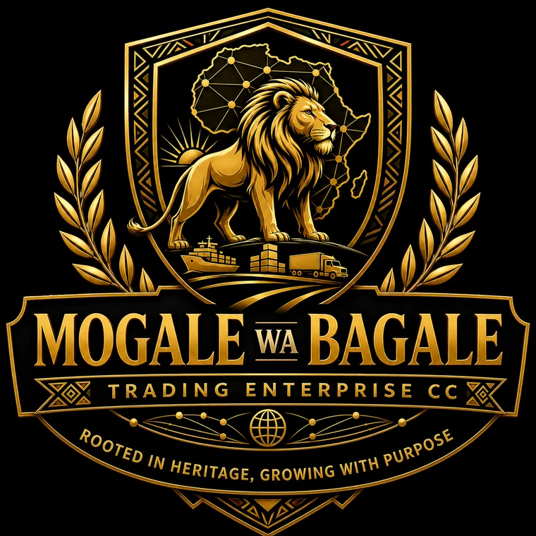

Funeral planning
Personal planning conversations and policy options for different family needs.
Compassionate guidance and dignified care, shaped around each family and their wishes.
In times of loss, families deserve calm guidance, thoughtful planning and respect for their traditions. Ramarutsi Funeral Services offers personal support to help families make arrangements and focus on being together.
From the first conversation through the service itself, our aim is to make each detail feel considered, dignified and true to the life being remembered.

“Every family has its own story. We are here to help honour it with dignity, compassion and care.”
Personal planning conversations and policy options for different family needs.
Support arranging burial or cremation in line with family wishes and traditions.
Guidance coordinating arrangements when a loved one must be brought home.
Coordination for catering, tents and practical arrangements for memorial services.
A compassionate point of contact and guidance through a difficult time.
Information about counselling and other available bereavement support.